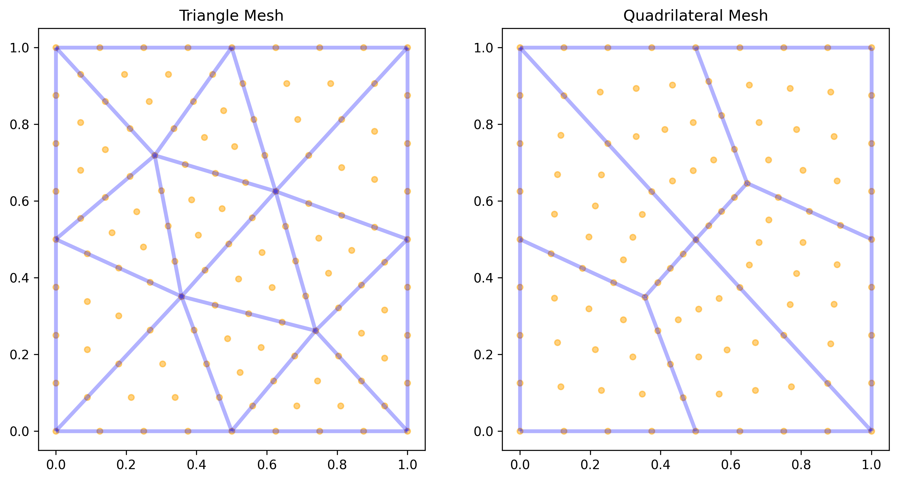
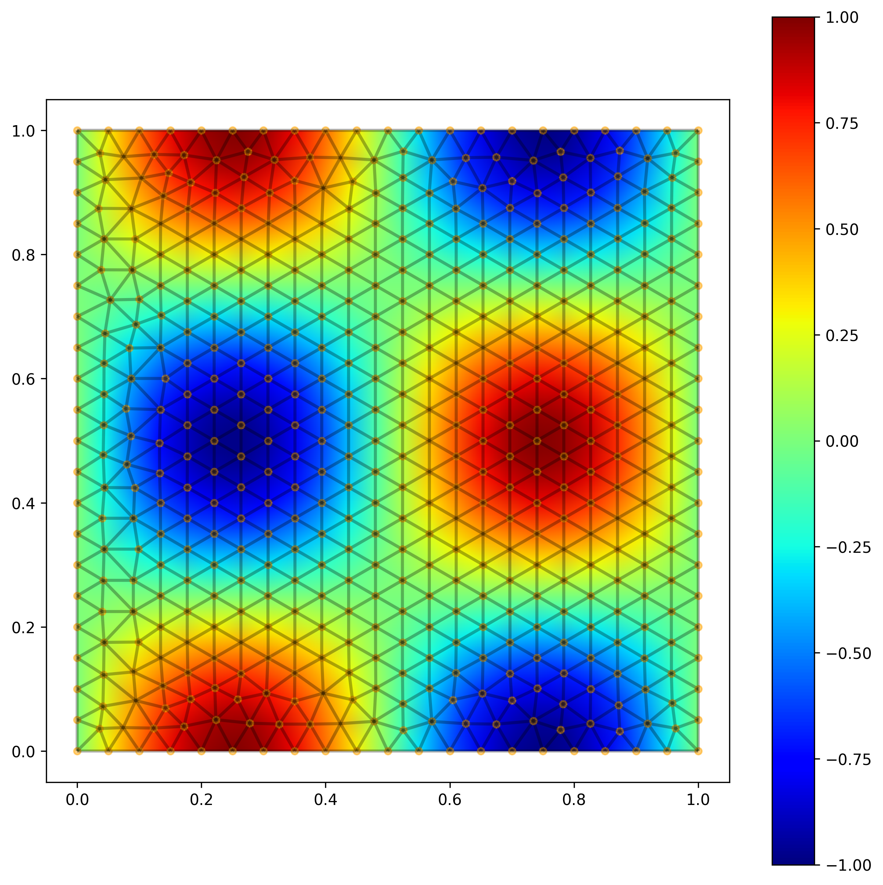

Meshes¶
A Mesh is the geometric and topological foundation
of every problem in TensorMesh. It holds the points, the connectivity
of one or more element types, and any per-node or per-element data
attached to them. Because Mesh extends
torch.nn.Module, you move it to a device with mesh.to("cuda"),
serialize it with state_dict, and let autograd track gradients
through anything that touches its tensors.
The Mesh data structure¶
Every mesh exposes the same six attributes:
Attribute |
Type |
Shape / contents |
|---|---|---|
|
|
|
|
|
keyed by element type (e.g. |
|
|
per-node fields. Keys starting with |
|
|
per-element fields, nested by element type then field name. |
|
|
mesh-global metadata (rare). |
|
|
meshio-style named subsets, kept opaque on round-trip. |
Because cells is a dict, mixed-element meshes (triangles + quads,
tets + hexes, …) are first-class. Iterating mesh.cells.items()
gives you each element block in turn.
Useful properties: mesh.n_points, mesh.n_elements, mesh.dim
(= mesh.points.shape[1]), mesh.dtype, mesh.device, and
mesh.default_element_type (the highest-dimensional type, falling
back to a list for mixed meshes).
Note
Throughout this guide and the API, “point” means DOF / interpolation
node, not “corner vertex of an element”. The two coincide for
linear elements but diverge for higher orders: a
Mesh.gen_rectangle(chara_length=0.3, order=2) carries 101
points against only 30 corner vertices — the 71 extras are the
mid-edge nodes of the triangle6 cells. The shape of
points therefore also matches the length
of any 1-D field you put into point_data.
Built-in generators¶
For domains with simple shapes, TensorMesh ships a Gmsh-backed
generator family. All return a Mesh ready to use
and accept chara_length (target element size) and order
(polynomial order) as the two universal knobs:
Generator |
Default element |
Domain |
|---|---|---|
|
axis-aligned rectangle on |
|
|
rectangle with rectangular hole |
|
|
disk of radius |
|
|
annulus |
|
|
L-shaped 2D domain |
|
|
axis-aligned 3D box |
|
|
cube with cubic hole |
|
|
solid ball of radius |
|
|
spherical shell |
A typical call and the resulting mesh:
from tensormesh import Mesh
mesh = Mesh.gen_rectangle(chara_length=0.1)
print(mesh)
Mesh(
points: torch.Size([144, 2])
cells: line:torch.Size([40, 2]),triangle:torch.Size([246, 3])
point_data: is_boundary(torch.bool):144,is_left_boundary(torch.bool):144,is_right_boundary(torch.bool):144,is_bottom_boundary(torch.bool):144,is_top_boundary(torch.bool):144,gmsh:dim_tags(torch.int64):2
cell_data: gmsh:physical(torch.int64):40,gmsh:geometrical(torch.int64):40
field_data: boundary(torch.int64):2,domain(torch.int64):2
)
Notice three things in the real output that the table above does not hint at:
cellscontains alineblock alongsidetriangle— the generators retain the 1-D boundary facets so thatFacetAssemblercan integrate over them directly.point_dataalready carries per-side boundary masks (is_left_boundary,is_right_boundary, …) in addition to the unionis_boundary. You get region-aware Dirichlet BCs for free.The
gmsh:*keys andfield_dataare the underlying Gmsh physical-group metadata, preserved on round-trip but rarely needed in user code.
{kind=link}

Fig. 1 gen_rectangle() produces a tri (left) or
quad (right) mesh of the rectangle. Mid-edge nodes (orange) are
visible because this figure uses order=2; with order=1 only
the corner vertices remain.¶
Smaller chara_length → finer mesh (and finer means quadratically
more points in 2D, cubically in 3D). Use order=2 to get
triangle6 / quad9 / tetra10 / hexahedron27 instead of
the linear default.
Composing custom geometries with MeshGen¶
When the shape you need is not one of the built-ins but is still
expressible as a Boolean combination of primitives — a plate with
holes, a domain with mixed element types, a 3-D part with cavities —
reach for MeshGen instead of writing a .geo
file by hand. It is a thin, scriptable wrapper around the Gmsh OCC
kernel that returns a TensorMesh Mesh directly:
import tensormesh as tm
gen = tm.MeshGen(element_type=None, chara_length=0.1, order=2)
gen.add_rectangle(0, 0, 0.5, 1, element="tri") # left half: triangles
gen.add_rectangle(0.5, 0, 0.5, 1, element="quad") # right half: quads
gen.remove_circle(0.5, 0.5, 0.1) # punch a hole
mesh = gen.gen()

Fig. 2 The mesh produced by the snippet above — order-2 triangles on the
left, order-2 quadrilaterals on the right, fused along a shared
interface, with a circular hole punched out. Orange dots are the
interpolation nodes (mid-edge nodes are present because order=2).¶
The same API extends to 3-D (dimension=3 plus add_cube /
remove_sphere), and element_type=None enables hybrid meshes
where different regions use different element types — fully supported
downstream because cells is a dict keyed by
element type.
A picture catalogue of what MeshGen and the
built-in generators can produce — primitives, hybrid meshes,
adjacency overlays, field visualizations — lives in the
Mesh generation gallery of the example gallery.
For geometries that go beyond CSG (CAD imports, named physical boundaries, anisotropic sizing fields), drive Gmsh directly and load the result via meshio (see I/O — loading and saving below).
Per-node and per-element data¶
Attach a field to every node:
import torch
u = torch.zeros(mesh.n_points)
mesh.register_point_data("u", u) # appears in mesh.point_data
print(mesh.point_data["u"].shape) # torch.Size([144])
The chained form mesh.register_point_data(...) returns the mesh,
which is convenient when building up a result before saving.
Per-element fields work the same way, keyed by element type:
energy = torch.zeros(mesh.n_elements)
mesh.register_element_data("strain_energy", energy)
# Equivalent to mesh.cell_data["triangle"]["strain_energy"] = energy
The lower-level cells, point_data,
cell_data are full BufferDict
objects — you can read them with [...], iterate them, or move
them with .to(device).
Boundary identification¶
The generators all populate point_data["is_boundary"] (a bool
tensor over points), which the convenience property exposes as:
mesh.boundary_mask # bool tensor, shape [n_points]
mesh.boundary_mask.sum() # number of boundary nodes
Hand-rolled meshes can use either is_boundary or boundary_mask
as the key — the property accepts both.
Per-side masks come for free. The 2-D / 3-D rectangular and
cuboidal generators (gen_rectangle(),
gen_hollow_rectangle(),
gen_L(), gen_cube(), …)
also register one is_<side>_boundary mask per face so you can pin
Dirichlet values on a single edge or face without recomputing the
geometry:
mesh = tm.Mesh.gen_rectangle(chara_length=0.1)
list(k for k in mesh.point_data.keys() if k.endswith("_boundary"))
# ['is_boundary', 'is_left_boundary', 'is_right_boundary',
# 'is_bottom_boundary', 'is_top_boundary']
int(mesh.point_data["is_left_boundary"].sum()) # 11

Fig. 3 Boundary points on Mesh.gen_rectangle(chara_length=0.08). Left:
the union mask mesh.boundary_mask. Right: the four per-side
masks set automatically by the generator, ready to feed into a
region-aware Condenser.¶
For curved domains (gen_circle(),
gen_sphere(), …) or hand-rolled meshes, derive
your own masks from coordinates and store them as additional
point_data entries:
x, y = mesh.points[:, 0], mesh.points[:, 1]
left = (x == 0)
right = (x == 1)
mesh.register_point_data("left_mask", left)
mesh.register_point_data("right_mask", right)
These plug straight into a Condenser for
non-homogeneous Dirichlet BCs (see Boundary Conditions).
I/O — loading and saving¶
TensorMesh round-trips through meshio, so any format meshio understands
(.msh, .vtk, .vtu, .xdmf, .obj, …) is fair game.
Loading. From a path:
mesh = Mesh.read("plate_with_hole.msh", reorder=True)
Or from an in-memory meshio object:
import meshio
raw = meshio.read("plate_with_hole.msh")
mesh = Mesh.from_meshio(raw, reorder=True)
The reorder=True flag is required when ingesting Gmsh or VTK
data: those formats use a different node-ordering convention for
quads, hexes, and high-order elements than TensorMesh’s internal
lexicographic layout. Skipping it produces silently-broken
basis-function evaluations. The built-in generators already handle
this, so you only need reorder=True on external files.
For a side-by-side visual of the two conventions — TensorMesh’s internal numbering on top, Gmsh / VTK on the bottom, for triangles, quads, tets, and hexes at orders 2–4 — see Gmsh / VTK ↔ TensorMesh node ordering. That gallery is the easiest way to verify which convention a hand-rolled connectivity array is using.
Saving. Whatever format meshio writes:
mesh.register_point_data("u", u_solution)
mesh.save("solution.vtu")
For .vtk and .vtu outputs, save automatically reorders
back to VTK convention and pads 2D coordinates to 3D — no flag
needed. The lower-level to_meshio() returns the meshio
object directly if you need custom write logic.
Inspecting and visualizing¶
A quick visual check of a 2D mesh and its solution is a one-liner:
mesh.plot({"u": u_solution}, save_path="u.png")
Pass a dict of {label: 1D tensor} for static side-by-side panels;
pass {label: list_of_tensors} to render an MP4/GIF animation
(needs pyvista).
import torch, numpy as np
mesh = tm.Mesh.gen_rectangle(chara_length=0.04)
x, y = mesh.points[:, 0], mesh.points[:, 1]
u = torch.sin(2 * np.pi * x) * torch.sin(2 * np.pi * y)
v = torch.cos(3 * np.pi * x) * torch.cos(3 * np.pi * y)
mesh.plot({"sin(2πx) sin(2πy)": u,
"cos(3πx) cos(3πy)": v}, save_path="fields.png")

Fig. 4 mesh.plot({...}) with a multi-key dict renders one panel per
field; each panel inherits a colourbar scaled to its own data
range.¶
By default plot() only colour-fills the
elements. Pass show_mesh=True to overlay the mesh wireframe
(and, at order ≥ 2, the interpolation nodes) on top of the
field — useful for sanity-checking a freshly solved problem:
mesh.plot({"u": u}, save_path="u.png", show_mesh=True)
{kind=link}

Fig. 5 mesh.plot({"u": u}, show_mesh=True) on a tri mesh. Without
show_mesh=True the same call would show only the smooth
colour fill, with no triangle edges or interpolation nodes drawn.¶
For a deep dive on visualization, including 3D deformation plots and animations, see the Example Gallery.
What’s next¶
Elements and Quadrature — the reference shapes, basis evaluation, and the ordering convention behind
reorder=True.Forms — turn a mesh into a stiffness matrix or load vector via the assembler base classes.
Quickstart — a complete worked Poisson problem that uses everything on this page.